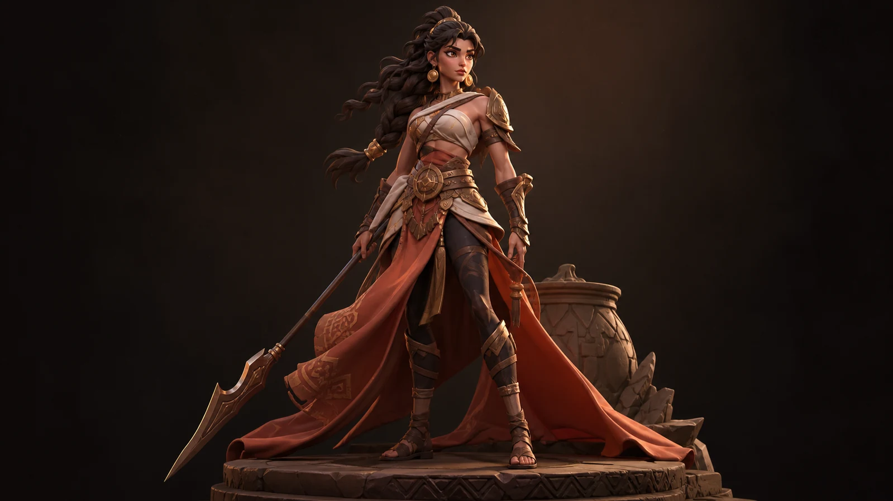
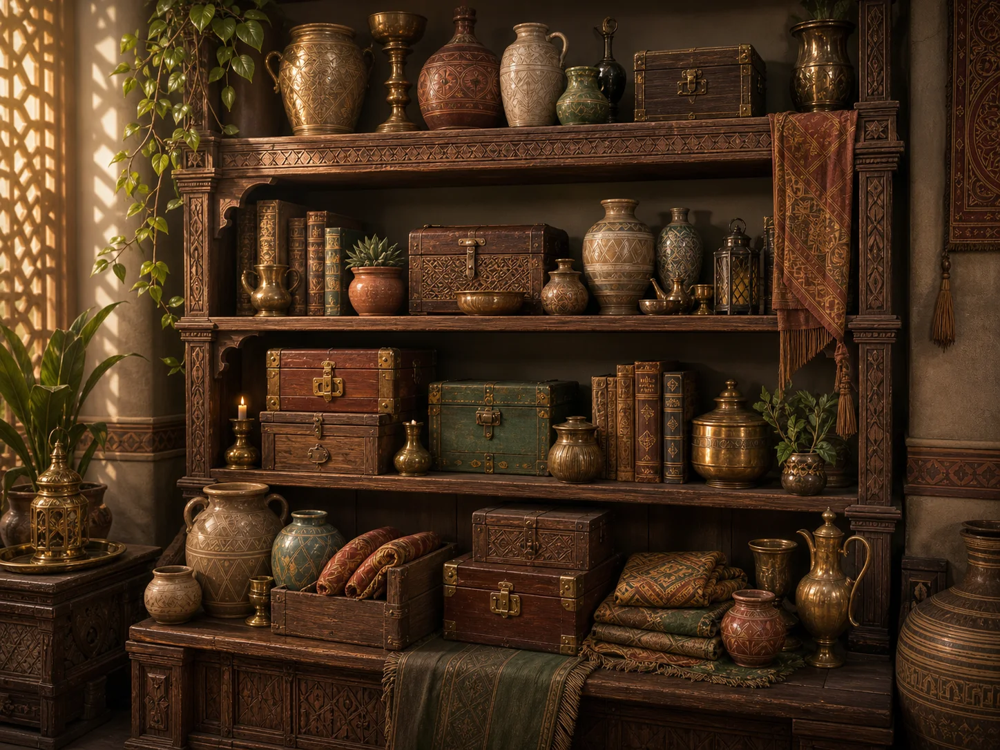
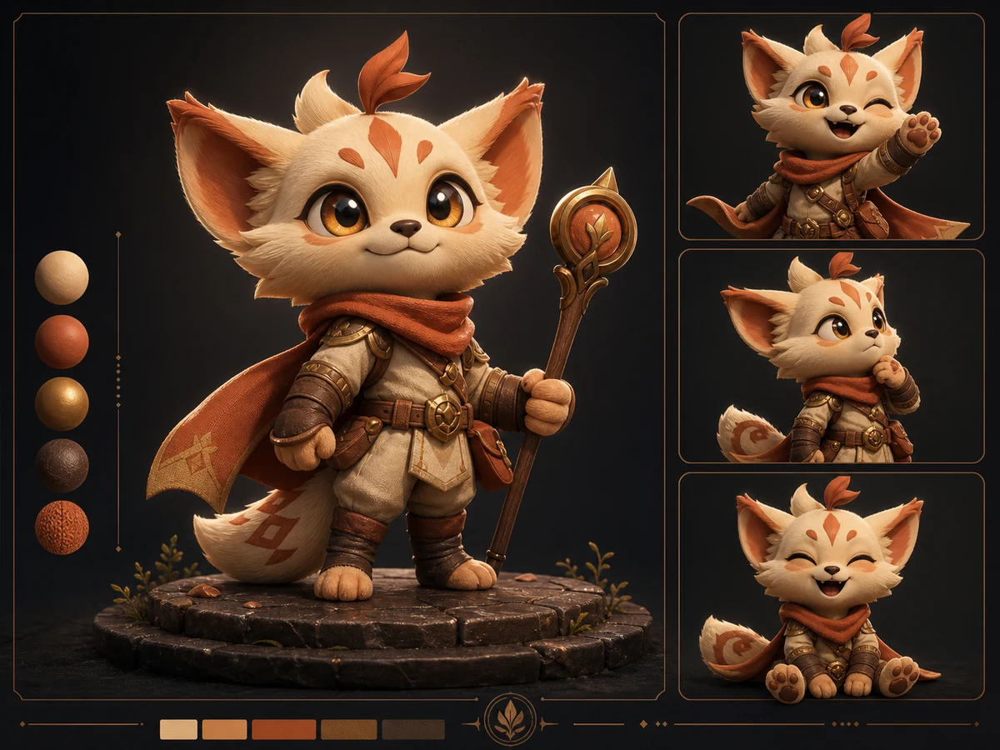
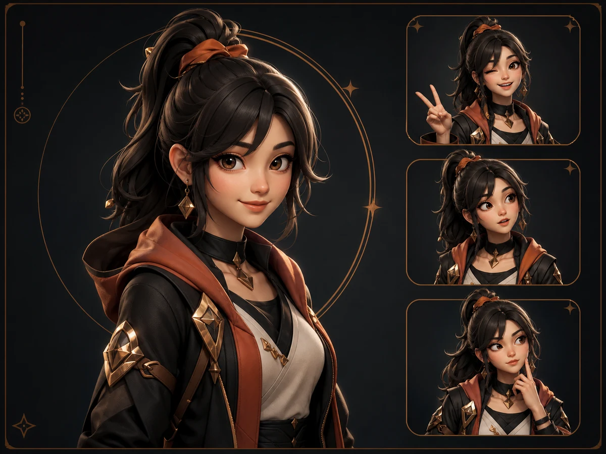

Scope
Define the character role, use case, style direction, variants, and delivery format from sketches, references, or founder notes.
3D Character Artist
I help founders, game teams, and creators turn character ideas into defined 3D products: visual direction, asset scope, production pipeline, and handoff-ready character files for games, avatars, mascots, brands, and real-time worlds.

Where I help
Founders, studios, and creators often arrive with references, mood, and a rough character direction. I turn that into a clear asset scope, production path, material direction, and handoff package before time is spent in the wrong place.
Define the character role, use case, style direction, variants, and delivery format from sketches, references, or founder notes.
Plan the path from concept to 3D: sculpt/model, retopo, UVs, textures, rig or engine needs, review gates, and constraints.
Resolve costume, metal, glass, fabric, prop, and surface-detail decisions so the asset reads clearly in presentation and real-time use.
Prepare renders, turnarounds, texture maps, source files, export notes, and review material so the next team can move without guessing.
Services
Each project starts with the intended use, available references, and required deliverables. Small assets and consultation can start lower; complete character packages are scoped after reviewing visual direction, technical requirements, and timeline.
Turn a sketch, reference image, moodboard, written brief, or rough idea into a polished 3D character with strong silhouette, readable materials, and usable deliverables.
Custom characters prepared for real-time pipelines with clean topology, UVs, textures, materials, and export-ready files.
Custom avatar characters with clear face read, expression direction, outfit style, and creator-facing presentation.
3D mascots and product characters for startups, apps, software products, education brands, campaigns, and creator businesses.
Stylized outfits, skins, props, clothing, and character add-ons for games, avatars, Roblox-style worlds, and creator identities.
Shelves, boxes, glass, metal, ceramics, wood, books, textiles, and small interior objects built from references into a cohesive 3D prop set.
High-poly sculpting, low-poly retopology, UV mapping, PBR or stylized texturing, materials, and final renders.
Character scope, visual direction, variant planning, production constraints, review checkpoints, and handoff strategy before the build gets expensive.
Workflow diagnosis, local AI visualization planning, 3D-aware agent instructions, system prompts, design libraries, implementation briefs, and team training for founder-led or small-team production.
Selected case studies
Projects are grouped by buyer use case: concept-to-3D characters, game-ready assets, character staging, interior props, material studies, avatars, mascots, outfits, technical process, and strategic workflow consulting.

Turns an early sketch, reference image, or moodboard into a polished character direction.

A full-body game-character presentation focused on silhouette, costume hierarchy, material read, and delivery planning.

A focused presentation for grounding the character with a plinth, scale cues, restrained props, lighting, and camera context.

Shelves, boxes, glass, metal, ceramics, wood, textiles, and books built into a mood-driven 3D prop set.
A workflow case for replacing inconsistent cloud AI experiments with local generation standards, material libraries, 3D-aware agent instructions, and review checkpoints.

A design-director case for turning collectible character ideas into a printable product system with agent-ready instructions, QA rules, and STL/3MF handoff.

A technical presentation format for showing sculpt forms, retopology direction, turnaround views, and inspection material.

An avatar character presentation with face read, expression range, costume detail, and creator-facing thumbnails.
A brand mascot presentation for product, startup, creator, education, and campaign character use.

A costume and accessory presentation built around outfit silhouette, material closeups, prop details, and variation options.
Case study
Each project page shows the brief, visual decisions, material reads, technical checks, final renders, and handoff notes a client or studio needs before production continues.
Define where the asset will live: game, avatar, mascot, pitch, brand, interior scene, or real-time product.
Translate sketches, moodboards, reference images, product notes, or existing concepts into a clear 3D direction.
Show sculpting, modeling, retopology, UVs, texture maps, surface reads, and final render decisions.
Document the inspection material a studio or production team expects before using the asset.
Deliver hero views, detail crops, turnarounds, material boards, and use-case images.
Package source files, exports, texture sets, render outputs, and clear delivery notes.
Process
A clear path from brief to delivery. Five stages, each with a defined output and a review checkpoint.
Define the character, visual style, use case, references, deliverables, timeline, and technical needs.
Refine silhouette, anatomy, proportions, color, materials, and character personality.
Create the character through sculpting, 3D modeling, high-poly or low-poly workflows.
Prepare topology, UV mapping, texture maps, materials, and renders depending on scope.
Final renders, turnarounds, BLEND, FBX, OBJ, texture maps, and handoff notes as agreed.
About
Lesly builds stylized 3D characters and supporting assets for games, creators, brands, and real-time products.

Her painting background gives the work a strong sense of color, form, anatomy, silhouette, costume language, and material separation.
The 3D pipeline covers character design, sculpting, modeling, retopology, UVs, texturing, materials, final renders, source files, exports, and handoff notes.
Start a project
Share the character idea, references, use case, timeline, and required deliverables. Include sketches, moodboards, written briefs, or existing character concepts if available.